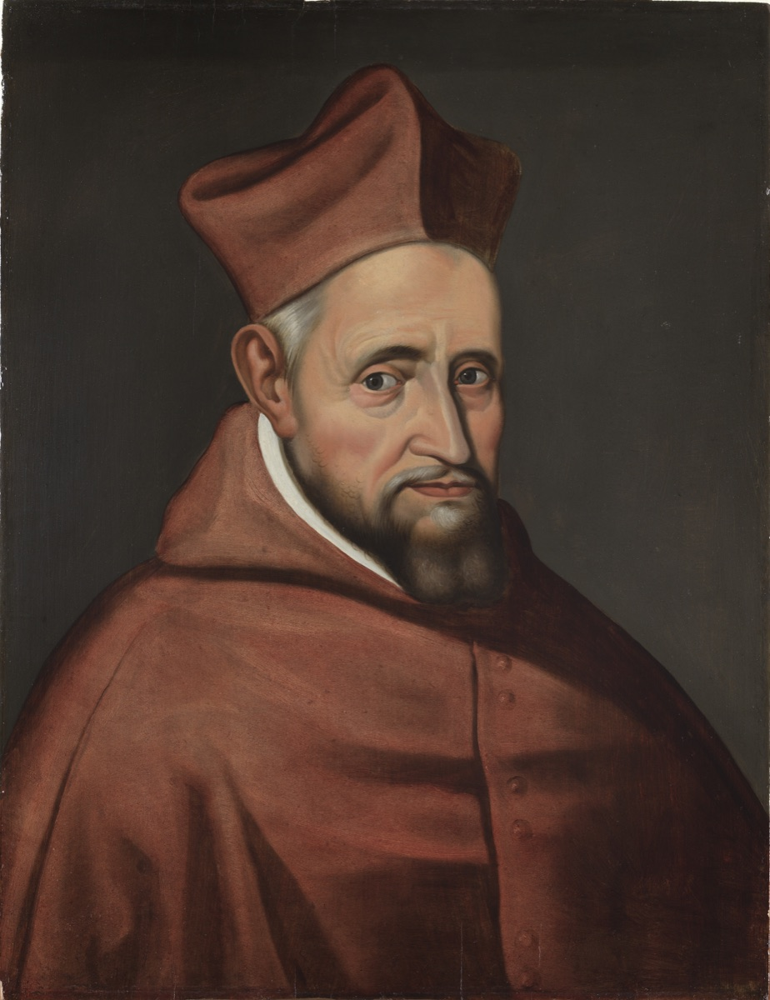
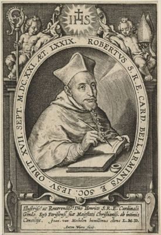

Crkveni naučitelji i teolozi
Svećenik
Sv. Robert Bellarmin
1542. – 1621.
Isusovac, profesor, kardinal i nadbiskup pisao je učene teološke rasprave i jednostavne katekizme. Njegov život povezuje pastoralnu službu i crkvenu obnovu sa složenim sporovima vjere i znanosti njegova vremena.

Izvor slike


Izvor slike
- Spomendan
- 17. rujna
- Zaštitništvo
- kanonisti · pisci katekizama · katehete · katekumeni
- Životni vijek
- 1542. – 1621.
- Djelovanje
- Obrazovanje i poučavanje vjere · Pisanje, znanost i umjetnost · Duhovno vodstvo i razlučivanje
- Razdoblje
- 16., 17. stoljeće
- Datum rođenja
- 04.10.1542.
- Mjesto rođenja
- Montepulciano, Toskana, Italija
- Datum smrti
- 17.09.1621.
- Mjesto smrti/mučeništva
- Novicijat Sant’Andrea al Quirinale, Rim, Italija
- Okolnosti smrti/mučeništva
- Umro nakon groznice u isusovačkom novicijatu.
- Uloga
- Svećenik
- Mučenik
- Ne
- Ostale oznake
- Kardinal; nadbiskup Capue; crkveni naučitelj; teolog i pisac
- Pripadnost
- Isusovac
- Drugi oblici imena
- Robert Bellarmine · Robert · Roberto Bellarmino · Robert Bellarmino
Životopis
Sveti Robert Bellarmin pripadao je naraštaju koji je katoličku vjeru izlagao usred dubokih podjela zapadnoga kršćanstva. Kao isusovac, profesor, kardinal i nadbiskup pisao je knjige velike učenosti, ali i kratke katekizme za pouku vjernika. Njegov život nije moguće svesti ni na glasovitost teologa ni na sporne postupke crkvenih sudova u kojima je sudjelovao. U njemu stoje zajedno napor oko crkvene obnove, ozbiljna pastoralna služba i odluke koje su u slučajevima Giordana Bruna i Galileija imale teške posljedice.
Rodio se 4. listopada 1542. u Montepulcianu u Toskani. Po majčinoj je strani bio nećak pape Marcela II. Stekao je humanističko obrazovanje, a 20. rujna 1560. stupio je u Družbu Isusovu. Studirao je u Rimu, Padovi i Leuvenu, oslanjajući se osobito na svetoga Tomu Akvinskoga i crkvene oce. Za svećenika je zaređen 25. ožujka 1570. u Leuvenu, gdje je potom predavao teologiju. Propovijedao je u Flandriji i učio odgovarati na pitanja koja su u to doba razdvajala katolike i protestante.
Godine 1576. pozvan je na Rimski kolegij. Tijekom desetljeća predavanja nastalo je djelo poznato kao Rasprave o sporovima kršćanske vjere, odnosno Controversiae. Bellarmin je sustavno razmatrao izvore objave, Crkvu, sakramente i druge točke spora nakon Reformacije. Posezao je za Svetim pismom, patristikom, poviješću i teološkim argumentima. Pisao je u doba kada se rasprava o nauku često prepletala s političkom odanošću i međusobnim neprijateljstvom. Njegova se knjiga zato čitala daleko izvan učionice i postala jednim od najutjecajnijih djela katoličke teologije nakon Tridentskoga sabora.
Njegovo promišljanje papinske vlasti nije bilo jednostavna tvrdnja da papa može izravno upravljati svakom državom. Razlikovao je duhovnu vlast Crkve od redovite građanske vlasti vladara, premda je papinskoj vlasti priznavao mogućnost posrednoga zahvata u vremenita pitanja kada je smatrao da je ugroženo spasenje duša. Takvo je tumačenje izazvalo rasprave i među katolicima. Bellarmin je branio crkvenu neovisnost od vladara, ali nije zastupao moderno odvajanje vjere i državne prisile. U njegovim su se spisima granice duhovne i političke vlasti nalazile pod stalnim pritiskom sukoba njegova vremena.
Od 1588. do 1594. bio je duhovni voditelj isusovačkih studenata Rimskoga kolegija, a zatim poglavar. Među mladićima koje je pratio bio je Alojzije Gonzaga. Kao učitelj nije ostao samo uz opsežne rasprave: u godinama 1597.–1598. priredio je sažete katekizme za pouku u vjeri. Kratka Kršćanska nauka postala je jedno od njegovih najraširenijih djela. Objašnjavati vjeru djetetu ili župljaninu nije bilo manje važno od odgovora učenome protivniku. Bellarmin je pisao i tumačenja Svetoga pisma, osobito pavlovskih poslanica, te propovijedao kleru, redovnicama i vjernicima.
Papa Klement VIII. povjerio mu je službu papinskoga teologa i savjetnika Svetoga oficija. Dana 3. ožujka 1599. imenovao ga je kardinalom. Ta mu je čast dala veći utjecaj, ali i težu odgovornost u crkvenim postupcima. Bellarmin je sudjelovao u dugom procesu protiv Giordana Bruna. Godine 1599. sastavio je niz tvrdnja iz Brunovih spisa od kojih se od optuženoga tražilo odricanje. Bruno je na kraju osuđen kao heretik, predan svjetovnoj vlasti i 17. veljače 1600. spaljen u Rimu. Bellarminova uloga u tom postupku ne nestaje time što nije osobno izvršio kaznu; sudjelovao je u mehanizmu koji je do nje doveo.
Godine 1602. imenovan je nadbiskupom Capue. Ondje je tri godine živio među svojim vjernicima, propovijedao u katedrali, obilazio župe i sazvao tri biskupijske sinode te pokrajinski sabor. Tridentska je obnova zahtijevala da biskup ne bude odsutan upravitelj, nego pastir koji poznaje svoju zajednicu. Bellarmin je taj zahtjev ozbiljno shvatio. Poučavao je kler, pratio pastoral i nastojao urediti život biskupije. Njegova se učenost u Capui mogla susresti s običnim župnim pitanjima, a ne samo s raspravama u Rimu.
Nakon konklava 1605. ponovno je pozvan u Rim. Radio je u više crkvenih kongregacija, među njima u Svetom oficiju i Kongregaciji Indeksa, te obavljao diplomatske zadaće u pitanjima odnosa Svete Stolice s Venecijom i Engleskom. Upravo su u tim godinama prijepori o dosegu crkvene vlasti pokazivali koliko je njegova teologija povezana s političkim odlukama. Kao kardinal nije odustao od pisanja ni od duhovnih vježbi. U posljednjem razdoblju života nastale su knjige o molitvi, Kristovoj muci i pripravi za smrt.
Najpoznatiji je njegov susret s novom astronomijom. U pismu karmelićaninu Paolu Antoniju Foscariniju 1615. Bellarmin je držao da se Kopernikov sustav može razmatrati kao računska pretpostavka, ali ne poučavati kao fizički dokazanu istinu. Dodao je da bi, ako se gibanje Zemlje doista dokaže, trebalo opreznije tumačiti biblijska mjesta koja na prvi pogled govore drukčije. To načelno razlikovanje biblijskoga tumačenja od znanstvenoga dokaza bilo je važno, ali nije poništilo njegov tadašnji sud: smatrao je da dokaz nije dan i da se heliocentrični nauk ne smije držati ni braniti.
Po nalogu pape Pavla V. Bellarmin je 1616. pozvao Galileija i priopćio mu ograničenje povezano s odlukom Kongregacije Indeksa. U vlastoručno potpisanoj potvrdi od 26. svibnja 1616. odbacio je glasine da je Galileo pred njim morao odreći Kopernikov nauk ili izvršiti pokoru. U istoj je potvrdi, međutim, zapisao da je Galileiju priopćeno kako se tvrdnja o Zemljinu gibanju i nepomičnu Suncu smatra protivnom Svetom pismu te je ne može držati ni braniti. Galileo će biti osuđen tek 1633., nakon Bellarminove smrti, no upozorenje iz 1616. bilo je dio puta prema tom kasnijem procesu. Ne može ga se prikazati kao jednostavna zagovornika znanstvene slobode.
Bellarmin je u poznim godinama pisao i za one koji nisu ulazili u učene sporove. U Umijeću dobre smrti govorio je o pripravi srca za susret s Bogom; razmatrao je i sedam Kristovih riječi na križu. Duhovni život za njega nije bio dodatak teologiji. Kao redovnik nastojao je očuvati jednostavnost, a sredstva koja je imao usmjeravao je siromasima. Njegove knjige pokazuju razliku između načina na koji se vodila polemika i jezika kojim je poticao molitvu, kajanje i pouzdanje u Božje milosrđe.
Umro je u Rimu 17. rujna 1621. Papa Pio XI. proglasio ga je blaženim 13. svibnja 1923., svetim 29. lipnja 1930., a 1931. crkvenim naučiteljem. Spomendan mu je 17. rujna. U njegovu životu Crkva pamti ustrajna katehetu i biskupa koji je ozbiljno shvaćao službu, a povijest pamti i kardinala uključenoga u postupke protiv Bruna i Galileija. Njegovo nasljeđe ostaje zahtjevno upravo zato što traži da se učenost, pastirska odgovornost i uporaba vlasti promatraju zajedno.
Pročitaj više na izvornoj stranici ↗
Molitve i dodatni sadržaji
Misli
Kristova škola je škola milosrđa. Posljednjeg dana, kada se održava opći ispit, uopće neće biti pitanja o Aristotelovom tekstu, Hipokratovim aforizmima ili Justinijanovim paragrafima. Dobročinstvo će biti cijeli nastavni program.
Mir i jedinstvo najpotrebniji su od svih stvari za ljude koji žive zajedno, i ništa ne služi tako dobro za njihovo uspostavljanje i održavanje kao strpljivo milosrđe kojim podnosimo nedostatke jedni drugih.
Jednom pečatu nije teško ostaviti mnogo potpuno jednakih otisaka, ali gotovo beskonačno varirati oblike, što je Bog učinio u stvaranju, to je zapravo božansko djelo.
Znaj da si stvoren na slavu Božju i svoje vječno spasenje. Ovo je vaš cilj; ovo je središte vašeg života; ovo je blago tvog srca.
Što je lakše, slađe, ugodnije nego ljubiti dobrotu, ljepotu i ljubav čija si punina ti, Gospodine, Bože moj.
Bježite od besposličarenja...jer nitko nije izloženiji takvim iskušenjima od onoga tko nema što raditi.
Neka te molitva raduje više od rasprava, i dobročinstvo koje izgrađuje više od znanja koje nadima.
Ljubav je divna i nebeska stvar. Nikada se ne umara i nikada ne misli da je učinila dovoljno.
Milosrđe je ono s čime nitko ne gubi život i bez čega se nitko ne može spasiti.
Sloboda vjerovanja je pogubna, nije ništa drugo nego sloboda biti u krivu.
Tko nađe Boga, nađe sve, tko izgubi Boga, izgubit će sve.
Unca milosrđa bolja je od stotinu hrpa razuma.Misli svetaca